Аннотации типов и документация кода · МДК.01.01 · разработка программных модулей
Глава 4.10
VS Code:
генератор и проверка
В этой главе редактор начинает помогать с докстрингами. Глава разбита на четыре части. В первой ставится расширение, которое вставляет заготовку докстринга по подписи функции. Во второй вид заготовки записывается в настройки проекта: формат, отдельные параметры, свой шаблон. В третьей та же заготовка вставляется сниппетом — средствами редактора, без расширения. В четвёртой включается проверка Ruff: она находит функции без описаний в редакторе, в терминале и в запросе на слияние.
- Категория
- Рабочее место
- Уровень
- Начальный
- Опирается на
- Главы 4.7–4.9, тема 02
- Зачем это знать
- Не набирать разделы руками и не искать пропуски глазами
Часть 1 · Генератор заготовок
§1Что редактор делает без расширений
Расширение Python от Microsoft вместе с языковым сервером Pylance устанавливается в VS Code одним пакетом и выполняет две задачи из этой темы.
| Возможность | Как пользоваться |
|---|---|
| Подсказка с докстрингом при наведении на имя функции | Указатель на имя, либо CtrlCmd + K, затем CtrlCmd + I |
| Подсказка при наборе аргументов вызова | Открывается сама после открывающей скобки; вызвать заново — CtrlCmd + Shift + Пробел |
Заготовку докстринга по подписи функции встроенные средства не создают. Для этого ставят отдельное расширение.
§2Расширение autoDocstring
Генератор заготовки похож на бланк заявления: графы напечатаны заранее, а заполняет их человек. autoDocstring — расширение VS Code, которое берёт имена и типы из подписи функции и вставляет по ним такой бланк докстринга. В нём краткая строка, раздел с параметрами по именам аргументов и раздел результата. Если в теле есть raise, добавляется раздел исключений. Разметку и перечень имён вставляет расширение, текст описаний пишет человек.
Найдите расширение по идентификатору и установите
Откройте панель расширений (CtrlCmd + Shift + X) и введите в поиске идентификатор:
njpwerner.autodocstring
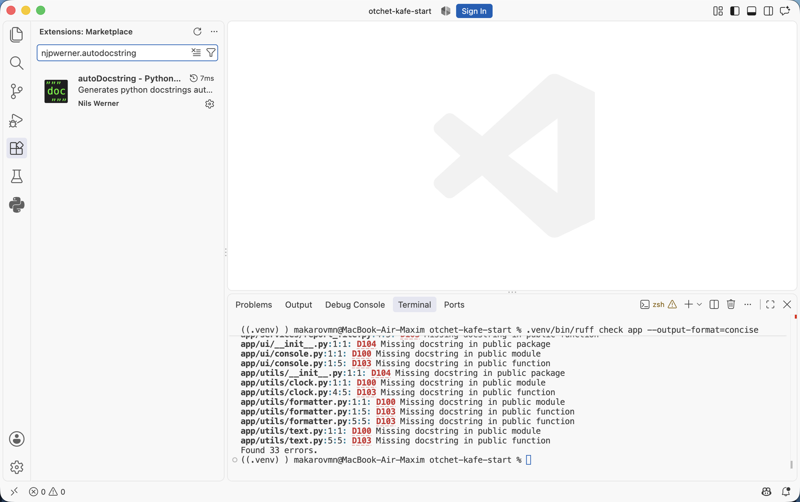
Ищут по идентификатору: в поиске есть несколько расширений с похожими названиями, и идентификатор отличает нужное однозначно.
Проверьте список установленных расширений
Введите в поле поиска @installed — останутся только установленные расширения. Для этой главы нужны четыре: Python и Pylance из главы 4.3, autoDocstring и Ruff — расширение проверки описаний. Если Ruff ещё нет, поставьте его так же, по идентификатору charliermarsh.ruff.
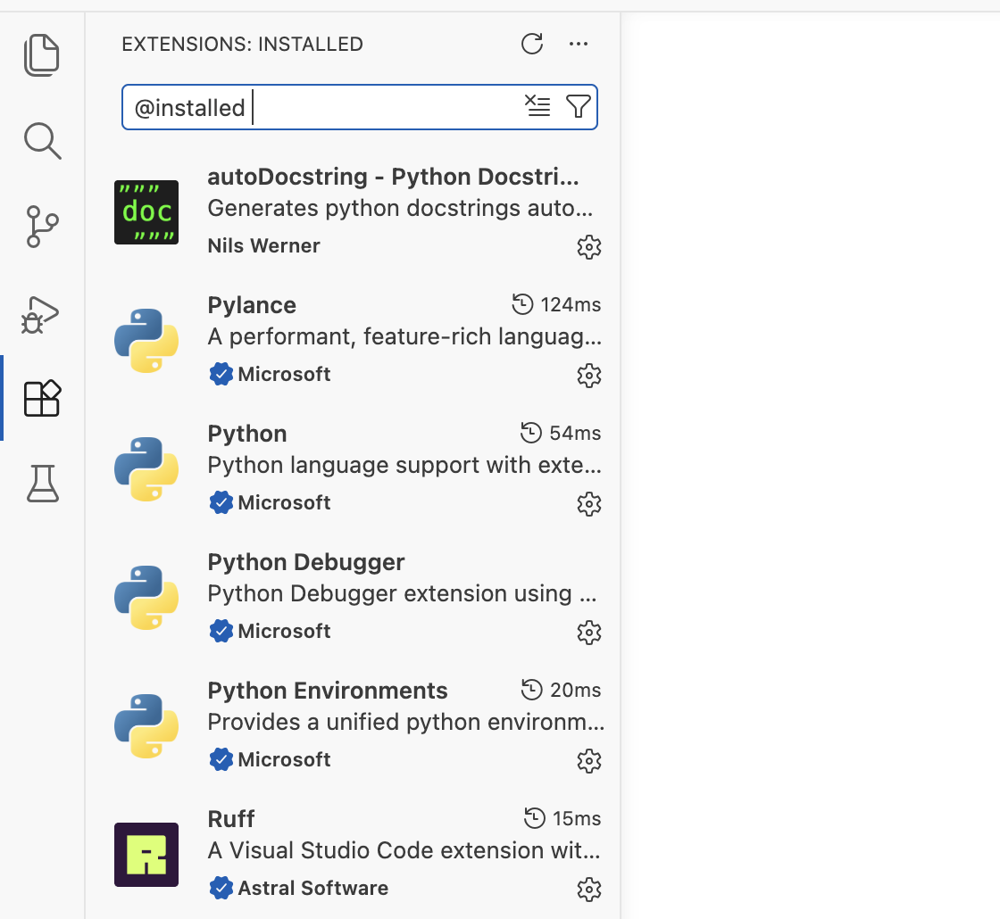
§3Как вызвать генератор
Вставку разберём на функции revenue_by_waiter из файла app/services/orders.py второго архива.
Поставьте курсор на строку с def
Откройте файл и поставьте курсор на строку с def — ту, у которой нужно описание.
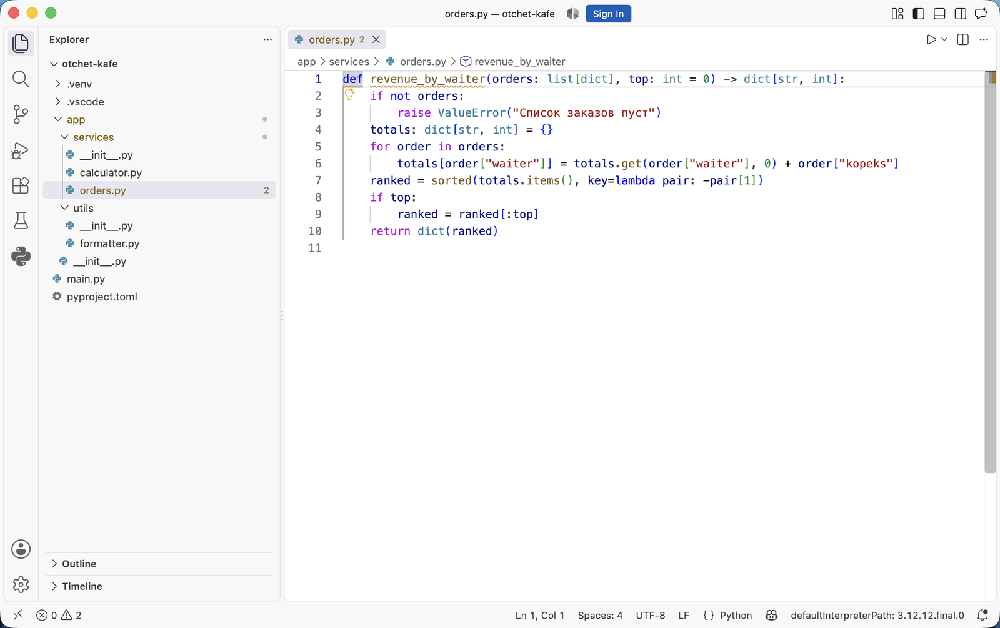
14 — это видно в строке состояния внизу: Ln 14, Col 1. Описания у функции нет. Цифра 4 у имени файла в дереве — число замечаний проверки по этому файлу.Сделайте пустую строку под подписью
Нажмите End (CtrlCmd + →), затем Enter: под подписью появится пустая строка с отступом тела.
Генератор вставляет заготовку на место курсора. Если вызвать его, когда курсор стоит в первой колонке строки def, описание встанет выше функции и код перестанет работать. Если курсор окажется на первой строке тела, закрывающие кавычки попадут в одну строку с кодом. Поэтому сначала делают пустую строку.
Вызовите генератор
Способов три. Первый — набрать три двойные кавычки и нажать Enter. Второй — нажать CtrlCmd + Shift + 2. Третий — открыть палитру команд (CtrlCmd + Shift + P) и выбрать Generate Docstring. В файл вставится заготовка:
def revenue_by_waiter(orders: list[Order], top: int = 0) -> dict[str, int]: """_summary_ Args: orders (list[Order]): _description_ top (int, optional): _description_. Defaults to 0. Raises: ValueError: _description_ Returns: dict[str, int]: _description_ """
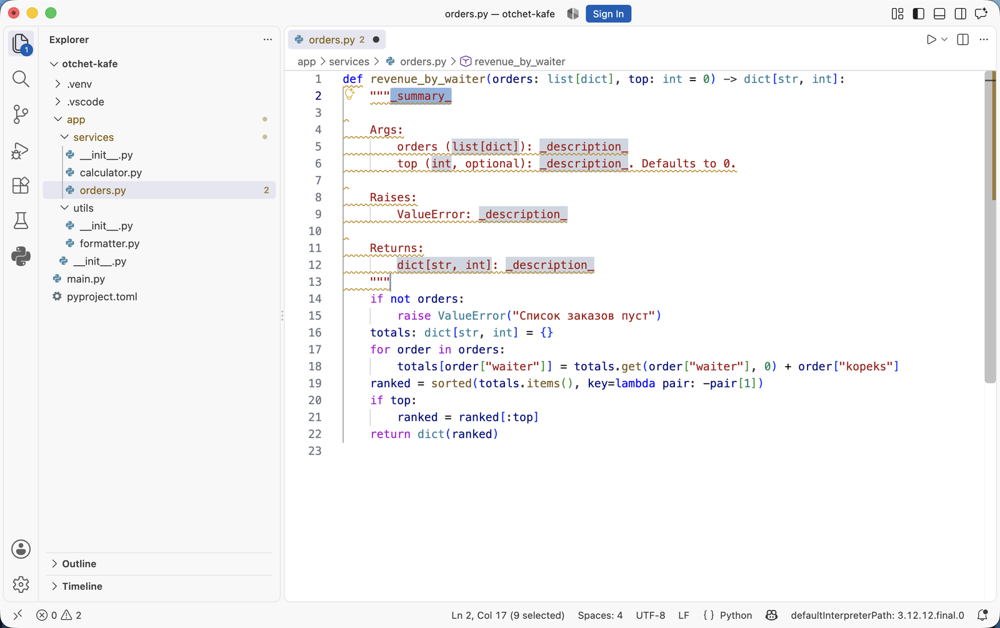
top приписаны optional и Defaults to 0; раздел Raises добавлен из-за raise ValueError в теле; в Returns подставлен тип из аннотации. Серым выделены поля для заполнения, между ними переходят клавишей Tab.Заполните поля заготовки
Переходите между серыми полями клавишей Tab и вписывайте текст: краткую строку с действием, смысл каждого параметра, условие ошибки, что означает результат. Типы в скобках у параметров уберите — они уже есть в подписи.
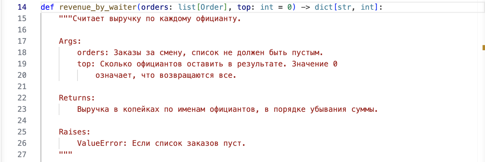
top объяснено, что значит 0; в Returns — единицы и порядок; в Raises — условие ошибки. Полей _description_ и типов в скобках не осталось.Что сделало расширение и что осталось человеку:
| Взято из кода расширением | Пишет человек |
|---|---|
| Имена параметров и их порядок | Что означает каждый параметр и какие значения допустимы |
Типы из аннотаций и признак optional | Смысл значения по умолчанию |
Раздел Raises: с классом исключения | Условие, при котором исключение возбуждается |
Раздел Returns: с типом результата | Что означает результат: единицы, порядок, границы |
| Разметку разделов и отступы | Краткую строку с действием функции |
Оставленные в коде _description_ — это докстринг, который повторяет перечень имён параметров, уже известный из подписи. Программа проверки докстрингов незаполненные поля замечанием не отмечает: докстринг формально есть. Она отметит только _summary_ без точки на конце — правилом D415. Поэтому заготовку заполняют, пока функция в работе.
Расширение autoDocstring установлено, у функции revenue_by_waiter есть заполненный докстринг.
Генератор пока работает с настройками по умолчанию: формат google и тип в скобках у каждого параметра. Типы пришлось удалять руками. Во второй части вид заготовки записывается в настройки проекта, чтобы лишнее не вставлялось.
Часть 2 · Настройка генератора под проект
§4Где лежат настройки
В первой части генератор работал с настройками по умолчанию. Чтобы заготовка у всех в команде получалась одинаковой, вид заготовки записывают в файл проекта. Сначала нужно найти этот файл.
У VS Code два уровня настроек, как у правил в общежитии и у настроек личного телефона. Правила общежития действуют на всех жильцов, телефон настроен под одного человека. Настройки проекта лежат в папке .vscode рядом с кодом и действуют на всех, кто откроет этот репозиторий. Настройки пользователя действуют на все проекты этого компьютера и в репозиторий не попадают.
| Уровень | Файл | Что туда пишут |
|---|---|---|
| Проект | .vscode/settings.json в корне репозитория | Формат докстрингов, правила проверки — общие для команды |
| Пользователь |
%APPDATA%\Code\User\settings.json
~/Library/Application Support/Code/User/settings.json
~/.config/Code/User/settings.json
|
Личные привычки: тема, шрифт, сочетания клавиш |
Настройки генератора относятся к проекту. Файл проекта открывают так:
Откройте файл настроек проекта
Откройте палитру команд (CtrlCmd + Shift + P) и наберите workspace settings json. В списке останутся две команды:
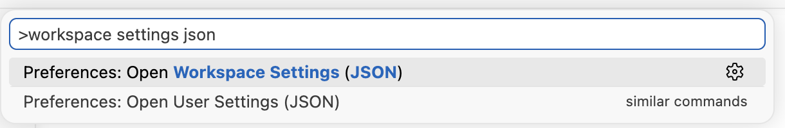
Выберите первую строку. Откроется файл .vscode/settings.json текущего проекта. Во втором архиве он уже есть, и в нём записаны настройки. Если файла нет, команда сразу создаёт его, а внутри ставит пустые фигурные скобки:
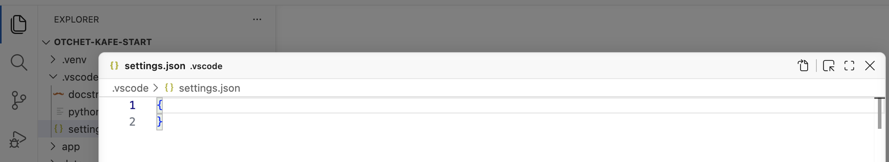
settings.json из двух строк: { и }. В проводнике слева файл уже появился в папке .vscode. В этой версии VS Code файл настроек открывается в отдельной панели поверх окна; крестик справа закрывает её.Запишите первую настройку
Настройки записываются парами «имя — значение» внутри фигурных скобок. Имя в кавычках, после двоеточия значение, пары разделяются запятой. Первая пара задаёт формат заготовки:
{
"autoDocstring.docstringFormat": "google"
}
Сохраните файл (CtrlCmd + S). Перезапускать редактор не нужно: следующий вызов генератора возьмёт новое значение.
Вторая команда из списка, Preferences: Open User Settings (JSON), открывает файл пользователя. Настройки генератора туда не пишут, иначе у соседа по команде заготовка будет другой.
В .gitignore проектов курса .vscode/ не вносят. Файл настроек проекта — часть договорённостей команды: формат докстрингов, включённые проверки, выбранный интерпретатор.
Файл найден, и в нём записан формат. Дальше разберём, какие форматы бывают и как выглядит заготовка в каждом.
§5Формат заготовки
Формат задаёт настройка autoDocstring.docstringFormat. Форматы докстрингов похожи на бланки разных организаций: сведения одни и те же, а графы названы и расставлены по-разному. В расширении девять форматов. Ниже шесть из них: для каждого — строка настройки и заготовка, которую расширение вставило с ней в функцию revenue_by_waiter из §3. Оставшиеся три — sphinx-notypes и numpy-notypes, те же форматы без типов, и docblockr с пометками @param, как в комментариях JavaScript.
Заготовка в разных форматахнастоящий вывод генератора
"autoDocstring.docstringFormat": "google"
def revenue_by_waiter(orders: list[Order], top: int = 0) -> dict[str, int]: """_summary_ Args: orders (list[Order]): _description_ top (int, optional): _description_. Defaults to 0. Raises: ValueError: _description_ Returns: dict[str, int]: _description_ """
Что видноРазделы Args:, Raises:, Returns:. У каждого параметра тип в скобках, у top — пометка optional и значение по умолчанию. Этот формат стоит в расширении по умолчанию, и его же разбирали в главах 4.7–4.8.
"autoDocstring.docstringFormat": "google-notypes"
def revenue_by_waiter(orders: list[Order], top: int = 0) -> dict[str, int]: """_summary_ Args: orders: _description_ top: _description_. Defaults to 0. Raises: ValueError: _description_ Returns: _description_ """
Что видноТе же разделы, что в google, но типов нет: orders: _description_ вместо orders (list[Order]): _description_. Тип уже записан в подписи функции, и удалять его из докстринга руками не придётся.
"autoDocstring.docstringFormat": "numpy"
def revenue_by_waiter(orders: list[Order], top: int = 0) -> dict[str, int]: """_summary_ Parameters ---------- orders : list[Order] _description_ top : int, optional _description_, by default 0 Returns ------- dict[str, int] _description_ Raises ------ ValueError _description_ """
Что видноНазвания разделов другие — Parameters вместо Args — и под каждым черта из дефисов. Тип пишется после двоеточия в строке с именем, описание — на следующей строке. Заготовка длиннее: 21 строка против 14 у google.
"autoDocstring.docstringFormat": "sphinx"
def revenue_by_waiter(orders: list[Order], top: int = 0) -> dict[str, int]: """_summary_ :param orders: _description_ :type orders: list[Order] :param top: _description_, defaults to 0 :type top: int, optional :raises ValueError: _description_ :return: _description_ :rtype: dict[str, int] """
Что видноРазделов нет, вместо них поля с двоеточиями. Описание и тип параметра — две разные строки: :param orders: и :type orders:. Так пишут в проектах, где документацию собирают программой Sphinx.
"autoDocstring.docstringFormat": "one-line-sphinx"
def revenue_by_waiter(orders: list[Order], top: int = 0) -> dict[str, int]: """_summary_ :param list[Order] orders: _description_ :param int top: _description_, defaults to 0 :raises ValueError: _description_ :return dict[str, int]: _description_ """
Что видноТе же поля, что в sphinx, но тип стоит в одной строке с именем: :param list[Order] orders:. Строк для типов нет, поэтому заготовка короче.
"autoDocstring.docstringFormat": "pep257"
def revenue_by_waiter(orders: list[Order], top: int = 0) -> dict[str, int]: """_summary_ Arguments: orders -- _description_ Keyword Arguments: top -- _description_ (default: {0}) Raises: ValueError: _description_ Returns: _description_ """
Что видноРазделы есть, но названы иначе: параметры без значения по умолчанию — в Arguments:, параметры со значением — в отдельном Keyword Arguments:. Имя отделено от описания двумя дефисами. Типов нет.
В проектах курса докстринги проверяет программа Ruff, и в её настройках указан формат google. С ней согласуются два значения: google и google-notypes. Для проектов курса подходит google-notypes: типы остаются в подписи и в докстринге не повторяются. Во втором архиве записан google — с ним типы в скобках удаляют руками, как в §3.
Формат определяет названия разделов. Остальной вид заготовки — где начинается краткая строка, какие кавычки, подставлять ли типы — меняют отдельные настройки.
§6Настройки вида заготовки
Каждая настройка — ещё одна строка в том же файле .vscode/settings.json. Ниже у каждой вкладки одна изменённая настройка, остальные остались по умолчанию, формат — google. Сравнивайте с заготовкой из §3: там все настройки по умолчанию.
Как настройка меняет заготовкунастоящий вывод генератора
"autoDocstring.startOnNewLine": true
def revenue_by_waiter(orders: list[Order], top: int = 0) -> dict[str, int]: """ _summary_ Args: orders (list[Order]): _description_ top (int, optional): _description_. Defaults to 0. Raises: ValueError: _description_ Returns: dict[str, int]: _description_ """
Что изменилосьОткрывающие кавычки стоят на отдельной строке, краткая строка _summary_ — под ними. С таким началом Ruff выдаст замечание с кодом D212: в формате google краткая строка должна начинаться сразу после кавычек. Поэтому в проекте оставляют false.
"autoDocstring.includeName": true
def revenue_by_waiter(orders: list[Order], top: int = 0) -> dict[str, int]: """revenue_by_waiter _summary_ Args: orders (list[Order]): _description_ top (int, optional): _description_. Defaults to 0. Raises: ValueError: _description_ Returns: dict[str, int]: _description_ """
Что изменилосьВ начало краткой строки подставлено имя функции: revenue_by_waiter _summary_. Имя и так видно в подписи и в подсказке редактора, поэтому его каждый раз стирают. В проекте оставляют false.
"autoDocstring.guessTypes": false
def revenue_by_waiter(orders: list[Order], top: int = 0) -> dict[str, int]: """_summary_ Args: orders (_type_): _description_ top (_type_, optional): _description_. Defaults to 0. Raises: ValueError: _description_ Returns: _type_: _description_ """
Что изменилосьТипы из аннотаций больше не подставляются: вместо list[Order] стоит поле _type_, которое нужно заполнить вручную. При true расширение берёт типы из подписи, как в §3. Если типы в докстринге не нужны, подходит формат google-notypes: с ним полей _type_ тоже нет.
"autoDocstring.includeExtendedSummary": true
def revenue_by_waiter(orders: list[Order], top: int = 0) -> dict[str, int]: """_summary_ _extended_summary_ Args: orders (list[Order]): _description_ top (int, optional): _description_. Defaults to 0. Raises: ValueError: _description_ Returns: dict[str, int]: _description_ """
Что изменилосьПод краткой строкой появилось второе поле — _extended_summary_, место под подробное описание из главы 4.7. Большинству функций проекта хватает краткой строки, и пустое поле приходится удалять. Поэтому в проекте оставляют false, а подробности дописывают сами там, где они нужны.
"autoDocstring.quoteStyle": "'''"
def revenue_by_waiter(orders: list[Order], top: int = 0) -> dict[str, int]: '''_summary_ Args: orders (list[Order]): _description_ top (int, optional): _description_. Defaults to 0. Raises: ValueError: _description_ Returns: dict[str, int]: _description_ '''
Что изменилосьДокстринг обрамлён тройными одинарными кавычками. Python принимает оба вида, но PEP 257 рекомендует двойные, и Ruff отметит одинарные замечанием D300. Поэтому строку quoteStyle в проекте не пишут: значение по умолчанию — двойные кавычки.
"autoDocstring.generateDocstringOnEnter": false
Эта настройка меняет способ вызова генератора. Текст заготовки остаётся прежним. При true заготовка вставляется после трёх кавычек и Enter — первый способ из §3. При false после трёх кавычек и Enter заготовка не вставляется. Сочетание CtrlCmd + Shift + 2 и команда Generate Docstring работают при любом значении.
Когда менятьВыключают её те, кому заготовка мешает при наборе многострочных строк в тройных кавычках, например текста SQL-запроса. В проекте курса оставляют true.
Итог по настройкам — какие значения записать в проект курса:
| Настройка | Значение в проекте | Почему |
|---|---|---|
docstringFormat | google или google-notypes | Согласуется с проверкой Ruff |
startOnNewLine | false | Иначе замечание D212 |
includeName | false | Имя видно в подписи |
guessTypes | true | Типы не вписывают вручную |
includeExtendedSummary | false | Подробности нужны не каждой функции |
quoteStyle | не писать | По умолчанию двойные кавычки |
generateDocstringOnEnter | не писать | По умолчанию true |
Перед именем каждой настройки в файле стоит приставка autoDocstring. — по ней VS Code определяет, к какому расширению относится строка. Так выглядит файл во втором архиве:
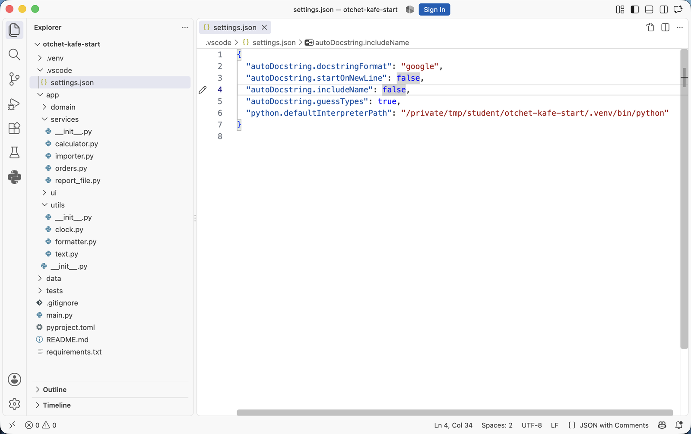
google и три настройки вида заготовки. Последнюю строку — путь к интерпретатору — VS Code дописал сам при выборе .venv. Строки quoteStyle нет: двойные кавычки стоят по умолчанию.Если ни один из девяти форматов не подходит, вид заготовки задают полностью своим шаблоном.
§7Свой шаблон
Шаблон похож на форму письма для рассылки: текст написан один раз, а на место пометок вроде «имя получателя» программа подставляет данные. Здесь пометки записываются на языке mustache — в двойных фигурных скобках. Например, {{var}} заменяется именем параметра из подписи функции. Подключается шаблон в четыре шага.
Создайте файл шаблона
В панели проводника щёлкните правой кнопкой по папке .vscode, выберите New File… и введите имя docstring.mustache. Вставьте в файл текст и сохраните:
{{summaryPlaceholder}}
{{#parametersExist}}
Args:
{{#args}}
{{var}}: {{descriptionPlaceholder}}
{{/args}}
{{#kwargs}}
{{var}}: {{descriptionPlaceholder}}. По умолчанию {{&default}}.
{{/kwargs}}
{{/parametersExist}}
{{#exceptionsExist}}
Raises:
{{#exceptions}}
{{type}}: {{descriptionPlaceholder}}
{{/exceptions}}
{{/exceptionsExist}}
{{#returnsExist}}
Returns:
{{descriptionPlaceholder}}
{{/returnsExist}}
Кавычки в шаблон не пишут: их ставит расширение.
Разберите, что означает каждая запись
В шаблоне два вида записей. Одиночная запись вроде {{var}} заменяется значением. Парная запись {{#имя}} … {{/имя}} — блок: он вставляется, если условие выполнено, или повторяется для каждого элемента списка. В таблице — что получится на функции revenue_by_waiter:
| Запись | Что делает | Что подставится |
|---|---|---|
{{summaryPlaceholder}} | поле для краткой строки | _summary_ |
{{#parametersExist}} | блок вставляется, если у функции есть параметры | раздел Args: есть |
{{#args}} | строка повторяется для каждого параметра без значения по умолчанию | одна строка — для orders |
{{#kwargs}} | строка повторяется для каждого параметра со значением по умолчанию | одна строка — для top |
{{var}} | имя параметра | orders, затем top |
{{&default}} | значение по умолчанию; знак & вставляет его как есть; без него кавычки в значении "руб" заменились бы на " | 0 |
{{#exceptions}} и {{type}} | строка для каждого raise в теле, {{type}} — класс исключения | ValueError |
{{#returnsExist}} | блок вставляется, если у функции есть аннотация результата | раздел Returns: есть |
{{descriptionPlaceholder}} | поле для описания; между полями переходят клавишей Tab | _description_ |
Блоки {{#args}} и {{#kwargs}} нужны оба. Если оставить только {{#args}}, параметр top со значением по умолчанию в заготовку не попадёт.
Подключите шаблон в настройках
Откройте .vscode/settings.json, как в §4, и добавьте строку с путём к шаблону. Путь пишут от корня проекта. Не забудьте запятую после предыдущей строки:
{
"autoDocstring.docstringFormat": "google",
"autoDocstring.customTemplatePath": ".vscode/docstring.mustache"
}
Когда задан шаблон, настройка docstringFormat перестаёт действовать: вид заготовки целиком определяет файл шаблона.
Вызовите генератор и сверьте результат
Сохраните оба файла и вызовите генератор на revenue_by_waiter так же, как в §3. Вставится заготовка по шаблону:
def revenue_by_waiter(orders: list[Order], top: int = 0) -> dict[str, int]: """_summary_ Args: orders: _description_ Raises: ValueError: _description_ Returns: _description_ """
Сравните с заготовкой google из §3. Типов в скобках нет. Строка про top заканчивается по-русски: По умолчанию 0. вместо Defaults to 0. Пометки optional тоже нет — значение по умолчанию и так названо.
В .vscode/settings.json записаны формат и вид заготовки, при необходимости — путь к своему шаблону. Файл лежит в репозитории, поэтому у всех, кто откроет проект, генератор вставляет одинаковую заготовку.
Всё это работает там, где установлено расширение autoDocstring. Без него заготовку можно вставлять средствами самого редактора — сниппетом.
Часть 3 · Сниппет без расширения
§8Сниппет докстринга
Сниппет похож на автозамену в телефоне: человек набирает короткое сокращение, а на его место встаёт заранее записанная фраза. Сниппет в VS Code — шаблон текста, который вставляется по короткому слову. Сниппеты проекта лежат в файле с расширением .code-snippets в папке .vscode и попадают в репозиторий вместе с кодом. Ставить ничего не нужно: сниппеты встроены в редактор.
Создайте файл сниппетов проекта
Откройте палитру команд и выберите Snippets: Configure Snippets. Появится список:
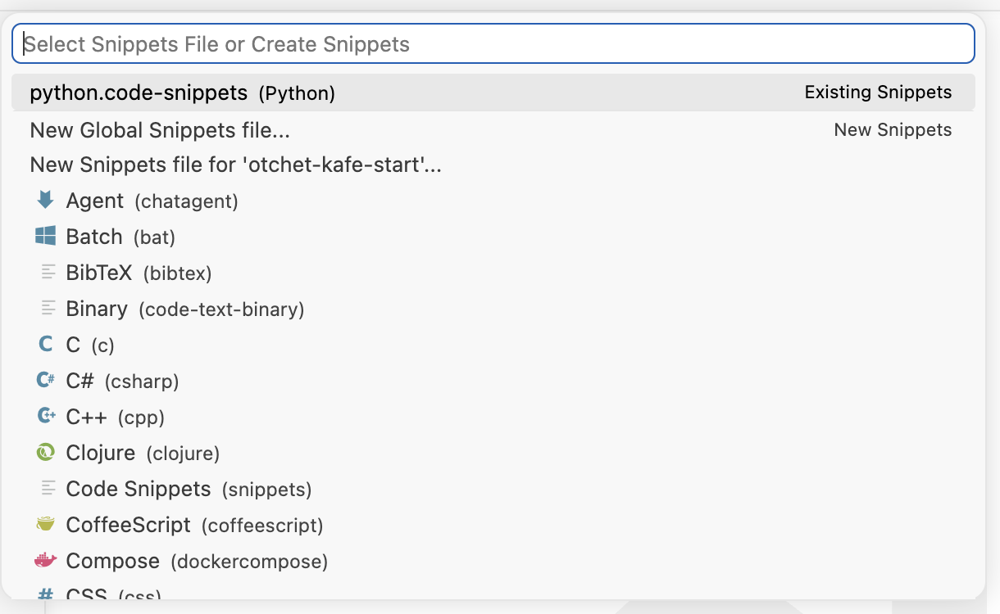
python.code-snippets с пометкой Existing Snippets. Ниже две команды создания: New Global Snippets file… — файл для всех проектов компьютера, New Snippets file for 'otchet-kafe-start'… — файл только для этого проекта. Дальше идёт перечень языков.Выберите New Snippets file for 'имя проекта'… и введите имя python. Редактор создаст файл .vscode/python.code-snippets и откроет его. Внутри будет закомментированный пример — его можно удалить. Если файл уже создан, как на кадре, выберите его в верхней строке.
Впишите сниппет
Замените содержимое файла текстом и сохраните:
{
"Докстринг в формате Google": {
"scope": "python",
"prefix": "dsg",
"body": [
"\"\"\"${1:Действие функции одним предложением.}",
"",
"Args:",
" ${2:параметр}: ${3:ограничения и смысл}",
"",
"Returns:",
" ${4:что означает результат}",
"\"\"\""
],
"description": "Заготовка докстринга с разделами Args и Returns"
}
}
Разберём записи по порядку:
| Запись | Что означает |
|---|---|
"Докстринг в формате Google" | Название сниппета. Редактор показывает его справа в списке подсказок. |
"scope": "python" | Сниппет предлагается только в файлах Python. |
"prefix": "dsg" | Слово, по которому сниппет появляется в подсказках. |
"body": [ … ] | Вставляемый текст. Каждый элемент списка — одна строка, пустые кавычки "" — пустая строка. |
\" | Кавычка внутри строки JSON. Три таких подряд дают три кавычки докстринга. |
${1:Действие функции…} | Поле. Число — порядок обхода клавишей Tab, текст после двоеточия — подсказка, которую заменяют своим текстом. |
Отступ тела функции в body не пишут: редактор сдвигает каждую строку на отступ той строки, где набрано слово. Четыре пробела перед ${2:параметр} — это отступ внутри раздела Args:.
Наберите слово сниппета под подписью
Откройте функцию без докстринга. Как и в §3, сделайте пустую строку под подписью: End, затем Enter. Наберите dsg — откроется список подсказок:
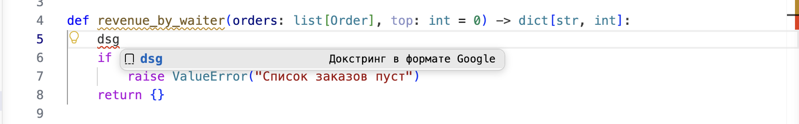
dsg — замечание: такого имени в коде нет. После вставки сниппета слова dsg не останется, и замечание пропадёт.Вставьте сниппет
Нажмите Enter или Tab. Слово dsg заменится текстом из body:
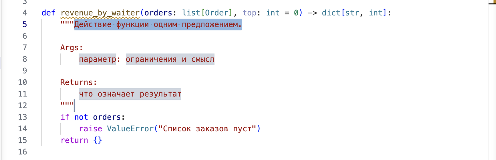
параметр, ограничения и смысл, что означает результат. Строки разделов получили отступ тела функции.Заполните поля и допишите остальное
Наберите краткую строку и нажмите Tab — выделится поле параметр. Наберите orders, снова Tab — опишите параметр. Ещё Tab — опишите результат. Последний Tab выводит курсор из сниппета.
Сниппет вставляет один и тот же текст для любой функции. Поэтому строку про второй параметр top и раздел Raises: для raise ValueError дописывают вручную. Получится:
def revenue_by_waiter(orders: list[Order], top: int = 0) -> dict[str, int]: """Считает выручку по каждому официанту. Args: orders: Заказы за смену, список не должен быть пустым. top: Сколько официантов оставить в результате. Значение 0 означает, что возвращаются все. Returns: Выручка в копейках по именам официантов, в порядке убывания суммы. Raises: ValueError: Если список заказов пуст. """
Текст совпадает с докстрингом, заполненным по заготовке генератора в §3. Разница в работе: строки top и Raises: генератор вставил сам, а здесь их набирали.
Сравнение двух способов:
| autoDocstring | Сниппет | |
|---|---|---|
| Установка | расширение из каталога | файл в .vscode, ничего ставить не нужно |
| Имена параметров | подставляет из подписи | не подставляет, вписывают вручную |
Раздел Raises: | добавляет, если в теле есть raise | только если записан в body |
| Как вызвать | три кавычки и Enter | слово dsg, затем Enter или Tab |
В проекте есть файл .vscode/python.code-snippets. По слову dsg в любой функции вставляется докстринг с разделами Args: и Returns:, имена параметров вписывают сами.
Генератор и сниппет срабатывают только там, где их вызвали. Функции, у которых описание забыли, они не показывают. Такие места находит проверка кода — она в части 4.
Часть 4 · Проверка докстрингов
§9Проверка докстрингов программой
Функции без описания находит проверка кода. Она работает как корректор в редакции: идёт по тексту и отмечает места, где нарушено правило оформления. Смысл написанного корректор не проверяет, и программа тоже. В курсе используется Ruff — программа проверки кода на Python, в которую входят правила pydocstyle: они отвечают за докстринги и обозначаются кодами с буквой D.
Проверка настраивается один раз на проект и затем запускается после каждой правки. Порядок такой:
Включите правила в pyproject.toml
Правила записываются в файле pyproject.toml в корне проекта. Во втором архиве этот раздел уже есть:
[tool.ruff.lint] select = ["E", "F", "D"] [tool.ruff.lint.pydocstyle] convention = "google" [tool.ruff.lint.per-file-ignores] "tests/*" = ["D"]
Три части этого файла означают следующее. Набор "D" включает правила о докстрингах вместе с обычными проверками кода. Строка convention = "google" согласует правила с выбранным форматом: часть правил, относящихся к другим форматам, отключается, чтобы требования не противоречили друг другу. Последний раздел снимает требование докстрингов с папки тестов: имя тестовой функции там само описывает проверяемый случай.
Запустите проверку всего пакета
Откройте терминал редактора (Ctrl + `) и выполните:
$ .venv/bin/ruff.venv\Scripts\ruff check app --output-format=concise
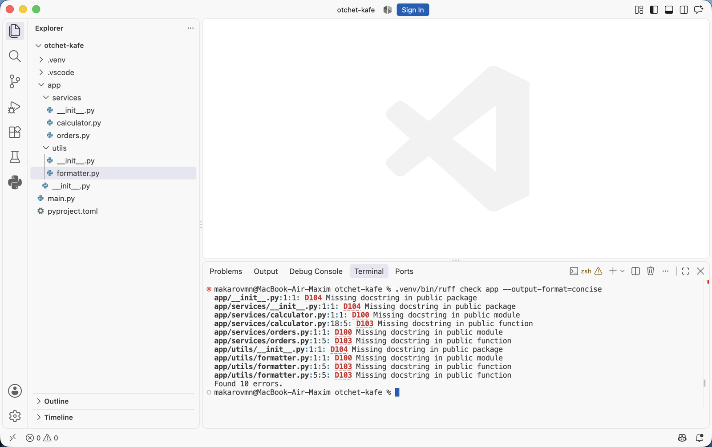
Found 33 errors.: столько мест в проекте пока без описаний. Без ключа --output-format=concise Ruff печатает то же самое подробнее, с фрагментом кода под каждым замечанием.По коду правила его находят в документации Ruff, где описано, что оно проверяет и как исправить.
Проверьте один модуль
Чтобы работать по частям, проверку запускают на одном файле — так в выводе только его замечания:
$ .venv/bin/ruff.venv\Scripts\ruff check app/services/orders.py
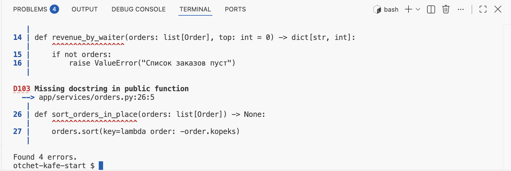
--output-format=concise: под каждым замечанием фрагмент кода с подчёркнутым местом. Внизу видно последнее — D103 Missing docstring in public function у sort_orders_in_place, и итог Found 4 errors.: нет описания у модуля и у трёх функций.Напишите описания и запустите снова
Добавьте докстринг модуля первой строкой файла и докстринги трёх функций — с генератором из §3. Сохраните файл и повторите команду (стрелка ↑ возвращает предыдущую).
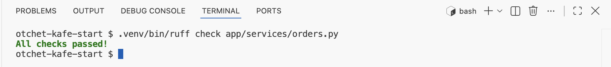
All checks passed! — замечаний нет. Ruff читает файл с диска, поэтому перед запуском файл сохраняют.§10Правила, которые чаще срабатывают
В выводе ruff check у каждого замечания код правила. В таблице — коды, которые на проектах курса встречаются чаще других, и как исправить каждое замечание.
| Код | Что проверяет | Как исправить |
|---|---|---|
D100 | Нет докстринга у модуля | Добавить описание первой строкой файла |
D101 | Нет докстринга у класса | Описать, что представляет объект |
D102 | Нет докстринга у публичного метода | Описать действие метода |
D103 | Нет докстринга у публичной функции | Добавить описание после def |
D104 | Нет докстринга у пакета | Добавить описание в __init__.py |
D200 | Описание из одной строки записано в три | Свести к """Текст.""" |
D205 | Нет пустой строки между краткой строкой и подробностями | Вставить пустую строку |
D209 | Закрывающие кавычки не на своей строке | Перенести кавычки вниз |
D210 | Лишние пробелы вокруг текста в кавычках | Убрать пробелы |
D415 | Первая строка не заканчивается знаком препинания | Поставить точку |
D417 | В разделе Args: описаны не все параметры | Дописать пропущенные или убрать лишние |
Как это выглядит на коде проекта — четыре случая с настоящим выводом проверки:
Какое правило сработаетчетыре случая из проекта
def format_title(text: str, width: int = 40) -> str: return text.center(width, "=")
formatter.py:1:1: D100 Missing docstring in public module formatter.py:1:5: D103 Missing docstring in public function
ИсправлениеДобавить докстринг модуля первой строкой файла и докстринг функции сразу после def.
"""Центрирует заголовок отчёта
Достраивает строку знаками «=» до нужной ширины.
"""
formatter.py:5:5: D205 1 blank line required between summary line and description
ИсправлениеПоставить точку в конце краткой строки и отделить её от пояснения пустой строкой.
"""Считает выручку по официантам.
Args:
orders: Заказы за смену.
Returns:
Выручка по именам.
"""
orders.py:4:5: D417 Missing argument description in the docstring for `revenue_by_waiter`: `top`
ИсправлениеДописать в раздел Args: строку про top. Это правило сравнивает докстринг с подписью функции, поэтому находит расхождение после правки кода.
"""
Возвращает дату для шапки отчёта
"""
clock.py:5:5: D200 One-line docstring should fit on one line clock.py:5:5: D212 Multi-line docstring summary should start at the first line clock.py:5:5: D415 First line should end with a period, question mark, or exclamation point
ИсправлениеСвести к одной строке и поставить точку: """Возвращает дату для шапки отчёта.""". У D212 есть готовое исправление в меню быстрых действий.
Правило D417 отличается от остальных тем, что сравнивает докстринг с кодом: перечень параметров в разделе Args: с подписью функции. Добавленный аргумент, для которого забыли строку описания, находится сразу. Остальные правила проверяют наличие описания и его оформление.
У части замечаний есть готовое исправление. Пример: заготовка генератора оставляет краткую строку _summary_ без точки на конце, и правило D415 предлагает её поставить.
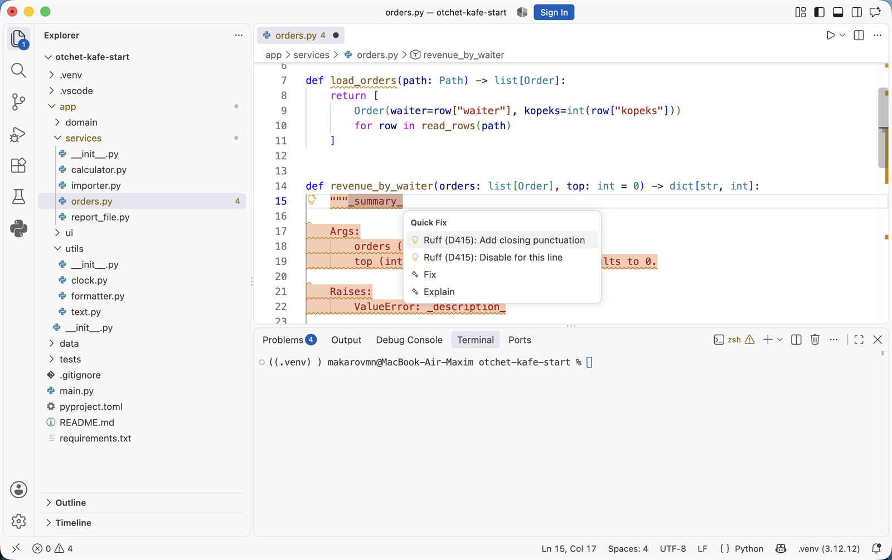
noqa. Вызывается меню сочетанием CtrlCmd + . или из палитры командой Quick Fix.Среди правил pydocstyle есть D401: первая строка докстринга записывается повелительной формой английского глагола. Конвенция google это правило не включает, и для русских описаний в форме «Считает…», «Возвращает…» замечаний не будет. Текущий перечень правил, входящих в конвенцию, приведён в документации Ruff по ссылке в конце главы.
§11Проверка в редакторе и в запросе на слияние
Чтобы замечания появлялись ещё во время набора кода, ставят расширение Ruff.
Установите расширение Ruff
Откройте панель расширений (CtrlCmd + Shift + X), введите идентификатор charliermarsh.ruff и нажмите Install.
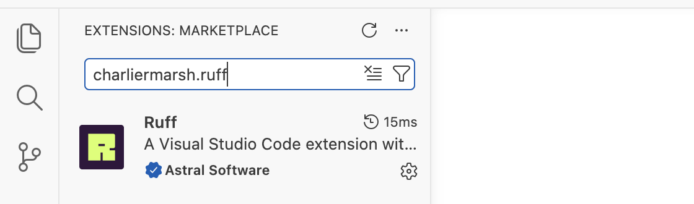
pyproject.toml, что и команда в терминале.Откройте файл и панель Problems
Откройте модуль без описаний, например app/utils/formatter.py, и панель Problems: CtrlCmd + Shift + M.
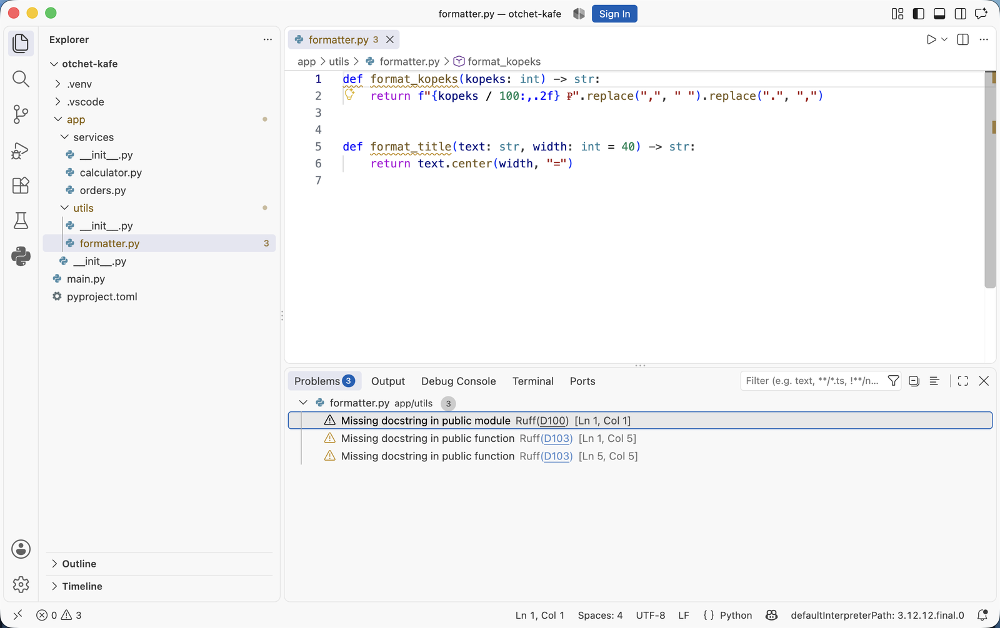
formatter.py. Замечания подписаны источником: Ruff(D100) — нет докстринга у модуля, Ruff(D103) — у двух функций. Справа в скобках строка и колонка; щелчок по строке открывает это место в файле. Цифра 3 рядом с именем файла в проводнике — то же число замечаний.Часть замечаний исправляется действием Quick Fix по сочетанию CtrlCmd + . — пример в §10.
Путь пропущенного описания
def и пишет замечание в панель Problems.
видно сразу
ruff check app печатает файл, строку и код правила.
перед коммитом
Шаги 2 и 3 зависят от одного файла настроек — pyproject.toml, поэтому редактор и терминал показывают одинаковые замечания.
Та же команда запускается в проверках запроса на слияние. Шаг Ruff стоит там следом за шагом mypy, который проверяет типы:
- name: Проверка типов
run: mypy app
- name: Проверка кода и докстрингов
run: ruff check app
- name: Тесты
run: python -m pytest -q
После этого отсутствие докстринга у публичной функции попадает в замечания к запросу на слияние так же, как функция без аннотаций или лишний импорт. Один запуск ruff check покрывает и оформление кода, и наличие описаний, а типы проверяет mypy.
Правила D включены в pyproject.toml. Команда ruff check app печатает функции без описаний, расширение Ruff показывает их в редакторе, а шаг в checks.yml повторяет проверку в запросе на слияние.
Вместе с частями 1–3 получается полный порядок работы: вставить заготовку генератором или сниппетом, заполнить её, запустить проверку. Мини-практика ниже проходит его на своём проекте.
§12Мини-практика: десять минут
- Установите расширение
njpwerner.autodocstringчерез панель расширений. - Откройте
.vscode/settings.jsonкомандой из §4 и запишите форматgoogle-notypesи значения из таблицы §6. - Откройте функцию без докстринга, поставьте курсор под подписью, наберите три кавычки и нажмите Enter. Заполните вставленные поля, переходя по Tab.
- Создайте сниппет
dsgпо §8 и вставьте им докстринг во вторую функцию. - Добавьте в
pyproject.tomlразделы из §9 и выполнитеruff check app. Разберите каждое замечание по таблице §10. - Исправьте замечания и добейтесь вывода
All checks passed!. - Добавьте в функцию новый параметр, не дописывая раздел
Args:, и запустите проверку снова: появитсяD417. Верните докстринг в соответствие с подписью.
§13Частые вопросы
_description_, и текст в них пишет человек._description_ для неё в порядке..vscode/settings.json и pyproject.toml внутри репозитория. Личные настройки остаются в настройках пользователя.§14Проверьте себя
Что вставляет autoDocstring и что остаётся человеку?
Расширение вставляет разметку выбранного формата, имена параметров из подписи, признак необязательности со значением по умолчанию, раздел Raises: при наличии raise в теле и раздел результата. Человек пишет краткую строку и описания на месте полей _description_.
Чем настройки проекта отличаются от настроек пользователя?
Настройки проекта лежат в .vscode/settings.json внутри репозитория и действуют у всех, кто его откроет: туда пишут формат докстрингов и общие правила. Настройки пользователя лежат в папке профиля VS Code, действуют на все проекты этого компьютера и в репозиторий не попадают.
Зачем в pyproject.toml строка convention = "google"?
Она согласует правила проверки с выбранным форматом: правила, относящиеся к другим форматам, отключаются. Без неё включённый набор "D" выдаёт замечания, требующие несовместимого оформления.
Что находит правило D417 и чем оно отличается от остальных?
Оно сравнивает параметры в подписи функции с перечнем в разделе Args:. Так находится расхождение после правки подписи: добавленный аргумент без описания или описание удалённого аргумента. Остальные правила проверяют наличие докстринга и его оформление, а это — соответствие докстринга коду.
Почему с папки тестов снимают требование докстрингов?
Имя тестовой функции описывает проверяемый случай: test_average_empty_list_raises. Отдельное описание повторяло бы имя. Поэтому в настройках проверки для папки тестов правила D отключают.
Проверка ruff check прошла без замечаний. Означает ли это, что документация в порядке?
Нет. Проверка отвечает за наличие докстрингов, их оформление и совпадение перечня параметров с подписью. Верность описания по смыслу и его соответствие поведению функции проверяет человек на разборе запроса на слияние.
§15Шпаргалка по главе
njpwerner.autodocstring
charliermarsh.ruff
""" и Enter
Cmd/Ctrl+Shift+2
палитра: Generate Docstring
.vscode/settings.json
autoDocstring.docstringFormat
google или google-notypes
.vscode/python.code-snippets
dsg, затем Enter или Tab
pyproject.toml
select = ["D"]
convention = "google"
ruff check app
панель Problems
Quick Fix: Cmd/Ctrl+.
D100, D103 — нет описания
D205 — нет пустой строки
D417 — параметр без описания
Итог главы
Редактор с расширением Python показывает докстринг в подсказке, но заготовку по подписи не создаёт: для этого ставят расширение njpwerner.autodocstring. Оно вставляет разметку выбранного формата, имена параметров, признак необязательности и раздел исключений; описания пишет человек. Формат и вид заготовки задают в .vscode/settings.json внутри репозитория, потому что это договорённость команды. Свой шаблон подключают файлом mustache. Без расширения заготовку вставляют сниппетом редактора по слову dsg. Пропущенные и неверно оформленные докстринги находит проверка. Правила pydocstyle включаются в pyproject.toml набором "D" с конвенцией google. Запускает их команда ruff check — в редакторе и в проверках запроса на слияние. Правило D417 сравнивает перечень параметров в докстринге с подписью функции. Верность описания по смыслу проверяет человек. В следующей главе всё это применяется к своему проекту: практика на паре и домашнее задание.
- Параметры, сочетания клавиш и перечень форматов расширения — страница autoDocstring в каталоге расширений VS Code.
- Уровни настроек и расположение файла настроек пользователя — документация VS Code, раздел Settings.
- Правила pydocstyle, их коды и конвенции — документация Ruff, перечень правил pydocstyle.
- Синтаксис сниппетов — документация VS Code, Snippets.
VS Code:
подсказки и проверка revive
В этой главе редактор начинает помогать с комментариями документации. Глава разбита на две части. В первой разобрано, что расширение Go делает само — подсказку, имя в начале комментария, выравнивание при сохранении, — и как вставлять строение подробного комментария сниппетом. Во второй включается проверка revive. Она находит экспортируемые имена без комментариев и комментарии не той формы. Запускают её в терминале, в редакторе и в запросе на слияние.
- Категория
- Рабочее место
- Уровень
- Начальный
- Опирается на
- Главы 4.7 и 4.8, тема 02
- Зачем это знать
- Не искать пропущенные комментарии глазами
Часть 1 · Комментарий в редакторе
§1Что редактор делает сам
Расширение Go вместе с языковым сервером gopls без настроек выполняет четыре задачи из этой темы. Установить gopls расширение предлагает уведомлением при первом открытии файла Go — это показано в главе 4.3, §3.
| Возможность | Как пользоваться |
|---|---|
| Подсказка с комментарием документации при наведении на имя | Указатель на имя, либо CtrlCmd + K, затем CtrlCmd + I |
| Подсказка при наборе аргументов вызова | Открывается сама после открывающей скобки; вызвать заново — CtrlCmd + Shift + Пробел |
| Имя в начале комментария | Набор начала имени после // над объявлением, затем Ctrl + Пробел |
| Выравнивание разметки комментария | Само, при сохранении файла: gofmt из главы 4.8 |
Третья строка таблицы — то, что нужно в начале каждого комментария. Наберите над функцией //, пробел и первые буквы её имени — gopls предложит имя из кода:
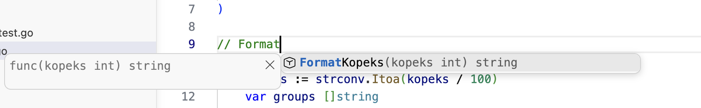
internal/utils/formatter.go. В строке 9 набрано // Format, и в списке подсказок — FormatKopeks(kopeks int) string, функция, объявленная строкой ниже. Enter вставит имя, и останется дописать действие: «FormatKopeks переводит сумму…».Подсказка избавляет от опечатки в имени. Комментарий с опечаткой в имени начинается не с имени объявления, и программа проверки отметит его замечанием.
§2Почему нет генератора заготовок
В ветке Python для VS Code ставят расширение autoDocstring: оно берёт имена из подписи функции и вставляет заготовку с разделами Args:, Returns: и именами параметров. Для Go такого расширения нет. В комментарии Go нет разделов, которые можно было бы заполнить из подписи: параметры и ошибки описывают обычными предложениями (глава 4.7, §5). Заготовка свелась бы к имени функции, а имя gopls подсказывает при наборе, как показано в §1.
Поэтому порядок работы другой:
| Шаг | Python | Go |
|---|---|---|
| 1 | генератор вставляет разметку с разделами и именами параметров | gopls подсказывает имя в начале комментария |
| 2 | человек заполняет поля заготовки | человек пишет текст предложениями |
| 3 | Ruff проверяет наличие и оформление докстринга | revive проверяет, что комментарий есть и начинается с имени |
Сначала — как держать под рукой строение подробного комментария.
§3Сниппет комментария
Строение подробного комментария — имя, действие, пустая строка, подробности — можно вставлять сниппетом. Сниппет похож на автозамену в телефоне: человек набирает короткое сокращение, а на его место встаёт заранее записанная фраза. Сниппет в VS Code — шаблон текста, который вставляется по короткому слову. Сниппеты проекта лежат в файле с расширением .code-snippets в папке .vscode и попадают в репозиторий вместе с кодом.
Создайте файл сниппетов
В проводнике щёлкните правой кнопкой по папке .vscode (если её нет, создайте: New Folder в корне проекта), выберите New File и назовите файл go.code-snippets. Вставьте в него:
{
"Комментарий документации функции": {
"scope": "go",
"prefix": "docf",
"body": [
"// ${1:Имя} ${2:действие одним предложением}.",
"//",
"// ${3:Ограничения параметров. Когда возвращается ошибка: [ErrX].}"
],
"description": "Первое предложение с имени, пустая строка, подробности"
}
}
Ключ prefix — слово, по которому сниппет вставляется. Ключ scope ограничивает его файлами Go. В body — строки шаблона, а ${1:…}, ${2:…} — поля, между которыми переходят клавишей Tab. Сохраните файл.
Наберите docf над функцией
Откройте internal/utils/formatter.go, сделайте пустую строку над func FormatTitle и наберите docf.
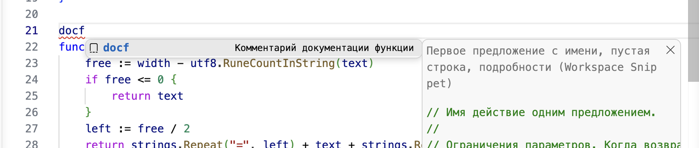
docf с описанием «Комментарий документации функции». Справа — пометка Workspace Snippet, то есть сниппет взят из папки проекта, и строки, которые вставятся.Вставьте заготовку и заполните поля
Нажмите Enter или Tab. Вставятся три строки, а слово Имя в первом поле будет выделено.
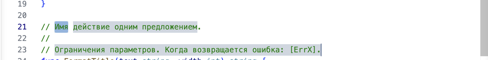
func FormatTitle, курсор в поле Имя. Наберите Form и выберите FormatTitle в подсказке gopls из §1, затем Tab — к полю действия, ещё раз Tab — к подробностям.Имя функции сниппет не подставляет: он вставляет заранее записанный текст, одинаковый для любой функции. Поэтому имя набирают в первом поле сами, с подсказкой gopls.
Допишите текст по коду функции
Во втором поле напишите действие функции, в третьем — подробности. FormatTitle ошибок не возвращает, поэтому слова про [ErrX] из третьего поля заменяют описанием границ. Получится:
// FormatTitle выравнивает text по центру строки шириной width. // // Свободное место заполняется знаками «=». Если оно не делится поровну, // справа ставится на один знак больше. Ширина считается в символах. // Если text не короче width, он возвращается без изменений. func FormatTitle(text string, width int) string {
Каждая фраза взята из тела функции: free / 2 знаков слева и остаток справа, подсчёт через utf8.RuneCountInString, ранний возврат при free <= 0. Сохраните файл: gofmt выровняет строки комментария, если отступы сбились.
gopls подсказывает имя в начале комментария, gofmt выравнивает разметку при сохранении, сниппет docf вставляет строение подробного комментария. Над FormatTitle написан комментарий документации.
Всё это срабатывает там, где комментарий начали писать. Имена, у которых комментарий забыли, редактор сам не показывает. Их находит программа проверки — она во второй части.
Часть 2 · Проверка revive
§4Проверка комментариев программой
Экспортируемые имена без комментария находит проверка кода. Она работает как корректор в редакции: идёт по тексту и отмечает места, где нарушено правило оформления. Смысл написанного корректор не проверяет, и программа тоже. Компилятор и go vet комментарии не проверяют. В курсе используется revive — программа проверки стиля кода на Go. Одно из её правил, exported, требует комментарий у каждого экспортируемого имени и проверяет, что он начинается с этого имени. Второе, package-comments, требует комментарий пакета.
Установите revive
revive ставится как программа командой Go:
$ go install github.com/mgechev/revive@latest
Команда скачивает и собирает программу и кладёт её в папку bin внутри go env GOPATH; при успехе она ничего не печатает. Если после этого команда revive не находится, эта папка не прописана в PATH. Тогда revive запускают без установки: go run github.com/mgechev/revive@latest ./... — результат тот же.
Запустите проверку модуля
Выполните в папке второго архива:
$ revive ./... | sort
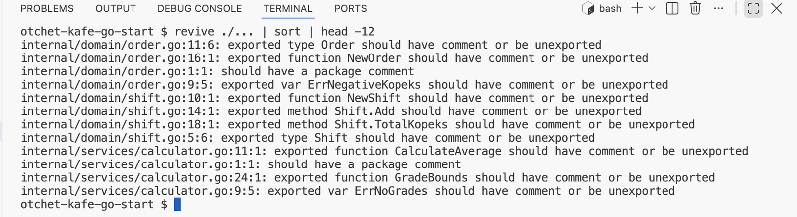
| head -12, чтобы показать первые двенадцать строк: замечания пакетов domain и services — нет комментария пакета, у типов, функций, методов и переменных ошибок.На втором архиве revive печатает двадцать семь строк. Порядок строк от запуска к запуску может меняться: пакеты проверяются параллельно, поэтому вывод сортируют командой sort. Начало и конец отсортированного вывода:
internal/domain/order.go:11:6: exported type Order should have comment or be unexported internal/domain/order.go:16:1: exported function NewOrder should have comment or be unexported internal/domain/order.go:1:1: should have a package comment internal/domain/order.go:9:5: exported var ErrNegativeKopeks should have comment or be unexported internal/domain/shift.go:10:1: exported function NewShift should have comment or be unexported … main.go:1:1: should have a package comment
Строка устроена так же, как у компилятора: файл, строка, столбец и сообщение. Сообщение exported type Order should have comment or be unexported читается так: «у экспортируемого типа Order должен быть комментарий, или его нужно сделать неэкспортируемым». Второй вариант — переименовать в order со строчной буквы — подходит, только если имя не нужно другим пакетам. В проекте нужны все, поэтому исправление одно — комментарий. Двадцать семь строк — это двадцать два экспортируемых имени и пять пакетов, включая main: столько комментариев предстоит написать.
По умолчанию revive завершается с кодом 0, даже если нашёл замечания. Проверке в запросе на слияние нужен код 1 при замечаниях, поэтому там добавляют флаг -set_exit_status. С ним go run добавляет в конец вывода строку exit status 1.
§5Где лежат настройки
Чтобы revive запускался из редактора, его указывают в настройках. Сначала — где эти настройки лежат. У VS Code два уровня настроек, как у правил в общежитии и у настроек личного телефона. Правила общежития действуют на всех жильцов, телефон настроен под одного человека. Настройки проекта лежат в папке .vscode рядом с кодом и действуют на всех, кто откроет этот репозиторий. Настройки пользователя действуют на все проекты этого компьютера и в репозиторий не попадают.
| Уровень | Файл | Что туда пишут |
|---|---|---|
| Проект | .vscode/settings.json в корне репозитория | Программа проверки и момент запуска — общие для команды |
| Пользователь |
%APPDATA%\Code\User\settings.json
~/Library/Application Support/Code/User/settings.json
~/.config/Code/User/settings.json
|
Личные привычки: тема, шрифт, сочетания клавиш |
Оба файла открываются через палитру команд: Preferences: Open Workspace Settings (JSON) для проекта и Preferences: Open User Settings (JSON) для пользователя. Папку .vscode держат в репозитории: файл настроек проекта — часть договорённостей команды. Если файла ещё нет, первая команда сразу создаёт его с пустыми фигурными скобками {}. В этот файл и записывают программу проверки.
§6revive в редакторе
Чтобы замечания появлялись в редакторе, расширению Go указывают, какой программой проверять код и когда.
Укажите revive в настройках проекта
Откройте файл настроек проекта командой Preferences: Open Workspace Settings (JSON) из §5 и впишите две строки:
{
"go.lintTool": "revive",
"go.lintOnSave": "package"
}
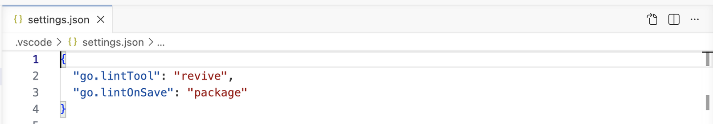
go.lintTool — программа проверки стиля, go.lintOnSave — что проверять при сохранении: file — только файл, package — весь его пакет, workspace — весь проект, off — не проверять.Расширение вызывает revive как команду, поэтому программа должна быть установлена — шаг 1 §4. Если её нет, расширение сообщит об этом уведомлением с кнопкой установки.
Сохраните файл и откройте Problems
Откройте internal/utils/formatter.go и сохраните его (CtrlCmd + S). Через несколько секунд в панели Problems (CtrlCmd + Shift + M) появятся замечания по всему пакету utils:
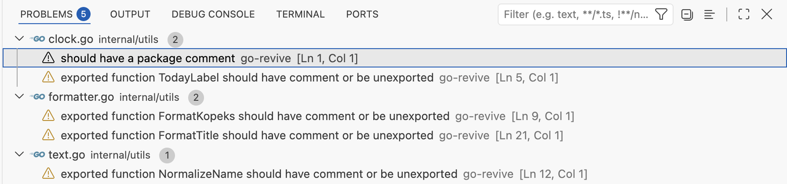
go-revive: у clock.go — нет комментария пакета и нет комментария у TodayLabel, у formatter.go — у двух функций, у text.go — у NormalizeName. Неэкспортируемая squashSpaces в списке не появилась. Замечания жёлтые: это предупреждения, сборке они не мешают.Напишите комментарий и сохраните снова
Добавьте над func FormatKopeks комментарий, начинающийся с имени, и сохраните файл.
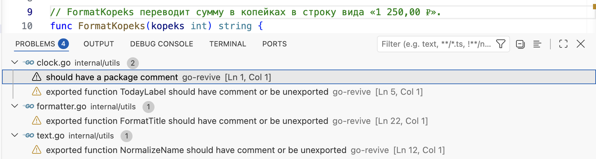
func FormatKopeks — комментарий из одной строки. Предупреждений стало четыре: замечание о FormatKopeks пропало, остальные относятся к другим именам пакета.revive запускается при сохранении файла, а gopls проверяет код ещё при наборе. Поэтому, написав комментарий, файл сохраняют, и замечание пропадает.
§7Замечания, которые чаще срабатывают
Сообщения revive написаны по-английски и строятся по нескольким образцам. В таблице — те, что на проектах курса встречаются чаще других, и как исправить каждое.
| Сообщение revive | Что не так | Как исправить |
|---|---|---|
should have a package comment | Ни в одном файле пакета нет комментария над package | Добавить // Package имя … в один файл пакета |
package comment should be of the form "Package utils ..." | Комментарий пакета есть, но начинается не со слов Package имя | Начать со слов Package utils |
exported function X should have comment or be unexported | У экспортируемой функции нет комментария | Добавить комментарий вплотную над func |
exported method T.M should have comment or be unexported | То же у метода | Комментарий над методом |
exported type X should have comment or be unexported | То же у типа | Комментарий над type |
exported var X should have comment or be unexported | То же у переменной, обычно ошибки ErrX | Комментарий: когда её возвращают |
comment on exported function X should be of the form "X ..." | Комментарий есть, но начинается не с имени: // Возвращает… | Начать с имени: // X возвращает… |
Сообщения о форме проверены на опыте в clock.go. Комментарий пакета // Пакет utils форматирует строки. дал package comment should be of the form "Package utils ...". Комментарий // Возвращает текущую дату. над TodayLabel дал comment on exported function TodayLabel should be of the form "TodayLabel ...". Комментарий типа // Kopeks — сумма. замечаний не дал: первым словом стоит имя.
Правило сравнивает только первое слово с именем объявления. Верность описания по смыслу оно не проверяет: комментарий // FormatKopeks делает всё. пройдёт проверку.
У staticcheck из главы 4.3 есть похожие правила. ST1000 отмечает пакет без комментария. ST1020, ST1021 и ST1022 отмечают комментарий функции, типа или переменной, который начинается не с имени. По умолчанию они выключены и включаются флагом -checks. Требования «комментарий обязателен у каждого экспортируемого имени» в staticcheck нет, поэтому в курсе используется revive.
§8Проверка в запросе на слияние
Редактор показывает замечания тому, кто пишет код. Чтобы пропущенный комментарий не попал в общий репозиторий, revive запускают ещё и в проверках запроса на слияние. На схеме — путь пропущенного комментария от кода до запроса на слияние:
Путь пропущенного комментария
revive ./... печатает файл, строку и имя без комментария.
перед коммитом
-set_exit_status выполняется на стороне репозитория и отмечает проверку непройденной.
до разбора работы
Шаги 2–4 выполняет одна и та же программа с настройками по умолчанию, поэтому редактор и проверка репозитория показывают одинаковые замечания.
В проверках запроса на слияние шаг revive стоит следом за сборкой и go vet:
- name: Сборка
run: go build ./...
- name: Проверка vet
run: go vet ./...
- name: Комментарии документации
run: go run github.com/mgechev/revive@latest -set_exit_status ./...
- name: Тесты
run: go test ./...
После этого отсутствие комментария у экспортируемой функции попадает в замечания к запросу на слияние так же, как ошибка сборки. Состав проверок такой: типы проверяет компилятор, подозрительные места — go vet, комментарии — revive, поведение — тесты.
revive установлен. Команда revive ./... печатает имена без комментариев. Расширение Go показывает их в панели Problems после сохранения. Шаг в checks.yml повторяет проверку в запросе на слияние.
Вместе с первой частью получается полный порядок работы: начать комментарий с имени по подсказке или сниппетом, дописать текст, сохранить и проверить. Мини-практика ниже проходит его на своём проекте.
§9Мини-практика: десять минут
- Во втором архиве откройте
.vscode/settings.jsonкомандой из §5 и впишите две строки из §6. Если расширение предложит установить revive, нажмите Install. - Откройте
internal/utils/formatter.go, сохраните его и посмотрите замечания в панели Problems. - Напишите комментарий над
FormatKopeks, начиная с имени, которое подскажет gopls после// Form. Сохраните файл: одно замечание должно пропасть. - Создайте сниппет из §3 и вставьте им комментарий над
FormatTitle. - Добавьте файл
internal/utils/doc.goс комментарием пакета. Сохраните — пропадёт замечаниеshould have a package comment. - Начните комментарий
TodayLabelсо слова «Возвращает» и сохраните: появитсяshould be of the form "TodayLabel ...". Исправьте. - Выполните в терминале
go run github.com/mgechev/revive@latest ./internal/utilsи добейтесь пустого вывода.
§10Частые вопросы
.vscode/settings.json внутри репозитория. Личные настройки остаются в настройках пользователя.§11Проверьте себя
Почему для Go нет генератора заготовок комментариев, как autoDocstring для Python?
В комментарии Go нет разделов, которые можно заполнить из подписи: параметры и ошибки описывают предложениями. Заготовка свелась бы к имени функции, а его gopls подсказывает при наборе после //.
Какие две строки в .vscode/settings.json включают revive в редакторе?
"go.lintTool": "revive" — какой программой проверять, и "go.lintOnSave": "package" — проверять весь пакет при сохранении файла.
Что означает exported function NormalizeName should have comment or be unexported?
У экспортируемой функции NormalizeName нет комментария документации. Исправление — добавить комментарий вплотную над func, начиная с имени.
Комментарий есть, а revive пишет should be of the form "TodayLabel ...". Что не так?
Комментарий начинается не с имени функции. Первым словом должно стоять TodayLabel.
Зачем в проверках запроса на слияние флаг -set_exit_status?
Без него revive завершается с кодом 0 даже при замечаниях, и проверка считается пройденной. С флагом код завершения — 1, и шаг отмечается непройденным.
Почему неэкспортируемая squashSpaces не попала в замечания?
Правило exported проверяет только имена с заглавной буквы — те, что видны из других пакетов. Для служебных имён комментарий по правилу курса необязателен.
§12Шпаргалка по главе
подсказка: Cmd/Ctrl+K, Cmd/Ctrl+I
// Form + Ctrl+Пробел — имя
gofmt при сохранении
.vscode/go.code-snippets
docf, затем Enter или Tab
go run github.com/mgechev/revive@latest ./...
-set_exit_status — для CI
"go.lintTool": "revive"
"go.lintOnSave": "package"
should have a package comment
should have comment or be unexported
should be of the form "X ..."
go build ./... · go vet ./...
revive -set_exit_status ./...
go test ./...
Итог главы
Расширение Go без настроек показывает комментарий документации в подсказке, подсказывает имя объявления в начале комментария и выравнивает разметку при сохранении. Генератора заготовок, как autoDocstring в Python, для Go нет: в комментарии нет разделов, и текст пишут сразу предложениями. Строение подробного комментария вставляют сниппетом docf. Пропущенные комментарии и комментарии, которые начинаются не с имени, находит revive. Он работает в терминале, в редакторе при сохранении — после двух строк в .vscode/settings.json — и в проверках запроса на слияние с флагом -set_exit_status. Верность описания по смыслу проверяет человек. В следующей главе всё это применяется к своему проекту: практика на паре и домашнее задание.
- Правила
exportedиpackage-comments, флаг-set_exit_status— revive, описание правил. - Параметры
go.lintToolиgo.lintOnSave— настройки расширения Go. - Правила ST1000, ST1020–ST1022 — staticcheck.dev, Checks.
- Синтаксис сниппетов — документация VS Code, Snippets.
- Выводы revive
1.17получены на втором архиве; кадры сняты в VS Code1.138с расширением Go0.56.